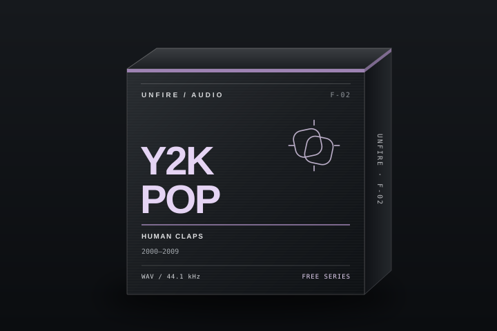
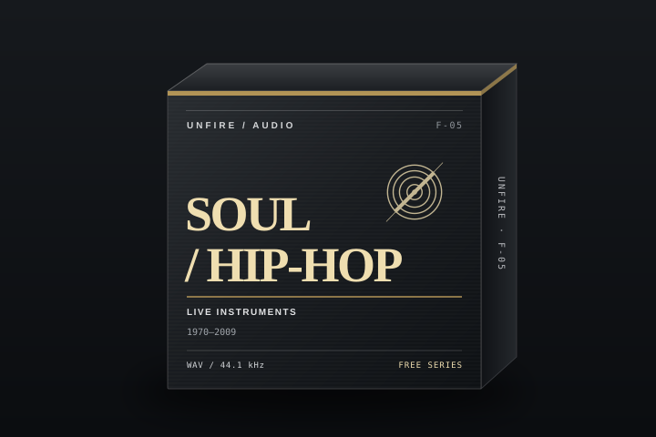
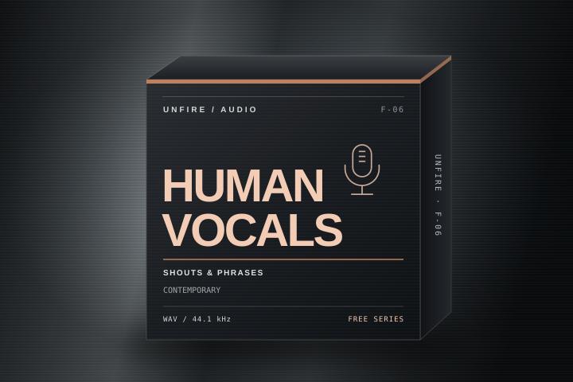

Atlanta Trap — 808 Essentials
Recorded Roland TR-808 kicks, clap, rim, snares and hats with original 140 and 150 BPM rhythmic arrangements.
Recorded instruments, hardware drums, human voices and original rhythmic arrangements. Explore by genre, scene and era. No signup. No generative AI.
Ad-libs, hooks, Latin phrases, trance and mouth percussion — original WAVs, free under CC0.
Explore vocal packs6 packs
Recorded Roland TR-808 kicks, clap, rim, snares and hats with original 140 and 150 BPM rhythmic arrangements.

Real handclaps, hi-hats and three double-clap edits made by layering recorded hits, plus 105 and 118 BPM loops.

Classic hardware percussion and handclaps, with 124 BPM house and 132 BPM garage-inspired rhythms.

Recorded congas, bongos, shakers, darbukas and maracas, plus two original rhythmic arrangements.

Real electric bass and guitar recordings, acoustic drum hits and two hip-hop / soul-inspired rhythms.

Original Producer Space recorded vocal shouts, soulful house phrases and Spanish phrases, redistributed under CC0.
No published packs match these filters yet.
Each ZIP contains a source manifest, checksums and licensing notice. The recordings remain open under their original CC0 dedication; Unfire releases its own rhythmic arrangements and double-clap edits under CC0. Sources include Versilian Community Sample Library, Michael Fischer TR-808 recordings, FreePats and Producer Space. Musical era and regional labels describe stylistic references, not recording dates or places. Technical preview: files have passed source and archive checks; artistic review is ongoing.
Use the samples in commercial music, games and other projects, without claiming exclusive rights in the source recordings. No paid products or subscriptions are required.